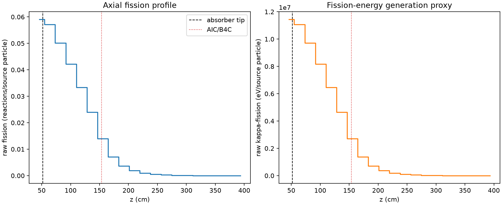
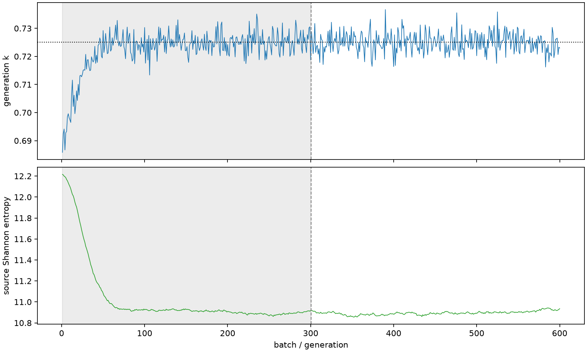

| field | value |
|---|---|
| experiment | V2-ADAPTIVE_01-0011 |
| k | 0.725051412686947 |
| MC standard error | 0.00015396839886214602 |
| seconds | 974.8049841650063 |
| acceptance | not_assessed |
| convergence | review_required |
Completed is output integrity only; physical and statistical review required. Zero tallies do not prove zero production or zero uncertainty.
| diagnostic | value |
|---|---|
| geometric fuel voxels | 5280 |
| zero fission tally voxels | 0 |
| low signal fuel voxels | 1275 |
| low signal fission share | 0.00023821391780730033 |
| low signal kappa share | 0.0002382469110114927 |
| important fission share | 0.9500632152985523 |
| previous filter included | 4005 |
| duration estimate s | 1562.5173488400023 |
| actual minus estimate s | -587.712364674996 |
| fission relative MC error | statistics |
|---|---|
| all_geometric_fuel | {"voxels": 5280, "positive_mean_voxels": 5280, "zero_mean_voxels": 0, "undefined_relative_error_voxels": 0, "median": 0.040266542318172824, "p95": 0.6030895546881464, "maximum": 1.0000000000000002} |
| low_signal | {"voxels": 1275, "positive_mean_voxels": 1275, "zero_mean_voxels": 0, "undefined_relative_error_voxels": 0, "median": 0.40697758044566046, "p95": 0.8444659832099627, "maximum": 1.0000000000000002} |
| important_95pct | {"voxels": 1851, "positive_mean_voxels": 1851, "zero_mean_voxels": 0, "undefined_relative_error_voxels": 0, "median": 0.007212717906326755, "p95": 0.012791626880549783, "maximum": 0.01858186015739371} |
| outside_previous_filter | {"voxels": 1275, "positive_mean_voxels": 1275, "zero_mean_voxels": 0, "undefined_relative_error_voxels": 0, "median": 0.40697758044566046, "p95": 0.8444659832099627, "maximum": 1.0000000000000002} |
| kappa_fission relative MC error | statistics |
|---|---|
| all_geometric_fuel | {"voxels": 5280, "positive_mean_voxels": 5280, "zero_mean_voxels": 0, "undefined_relative_error_voxels": 0, "median": 0.040192129377372474, "p95": 0.601325979685884, "maximum": 1.0} |
| low_signal | {"voxels": 1275, "positive_mean_voxels": 1275, "zero_mean_voxels": 0, "undefined_relative_error_voxels": 0, "median": 0.4066476103245809, "p95": 0.8429940639893234, "maximum": 1.0} |
| important_95pct | {"voxels": 1851, "positive_mean_voxels": 1851, "zero_mean_voxels": 0, "undefined_relative_error_voxels": 0, "median": 0.0072005909102329044, "p95": 0.012765348725317989, "maximum": 0.018554210260781735} |
| outside_previous_filter | {"voxels": 1275, "positive_mean_voxels": 1275, "zero_mean_voxels": 0, "undefined_relative_error_voxels": 0, "median": 0.4066476103245809, "p95": 0.8429940639893234, "maximum": 1.0} |
| axial bin | fission share | kappa-fission share |
|---|---|---|
| 1 | 0.20034541684599985 | 0.2003044259192307 |
| 2 | 0.19379654624651738 | 0.19380407468770042 |
| 3 | 0.1700540363510174 | 0.17006066980305443 |
| 4 | 0.143288864108825 | 0.14329458408499096 |
| 5 | 0.11327631087952642 | 0.11328108152599009 |
| 6 | 0.08130696498360178 | 0.08131063113042836 |
| 7 | 0.04760956504909361 | 0.04761432604937941 |
| 8 | 0.024209912816809762 | 0.024213888300782672 |
| 9 | 0.01244500092600861 | 0.012446927487377059 |
| 10 | 0.006521798022483373 | 0.006522733706102299 |
| 11 | 0.003402249108737223 | 0.003402738634543289 |
| 12 | 0.00175758480140223 | 0.0017579076705775281 |
| 13 | 0.0009705990337217865 | 0.0009707359528410934 |
| 14 | 0.0005022360111346878 | 0.0005022832947553079 |
| 15 | 0.0002591883692279105 | 0.000259229909030586 |
| 16 | 0.00013506948126738605 | 0.00013508737095883056 |
| 17 | 6.593026545433524e-05 | 6.593944782827e-05 |
| 18 | 3.220245216665863e-05 | 3.220697372727616e-05 |
| 19 | 1.539747219619064e-05 | 1.540056564866991e-05 |
| 20 | 5.126774808277068e-06 | 5.127485053029042e-06 |
Histories include the inactive-to-active transition at batch 300. kappa-fission approximates fission energy production, not total heat deposition.

